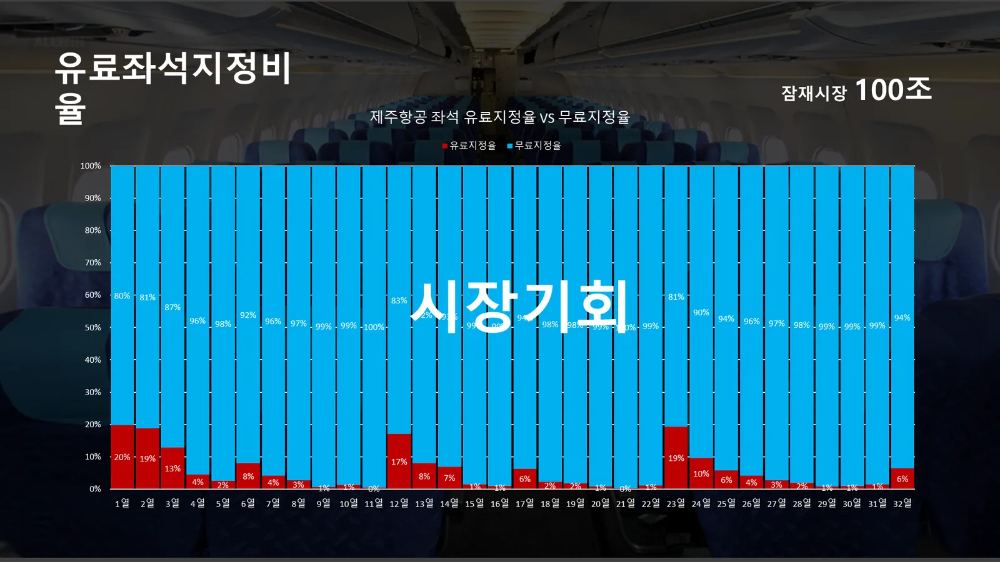
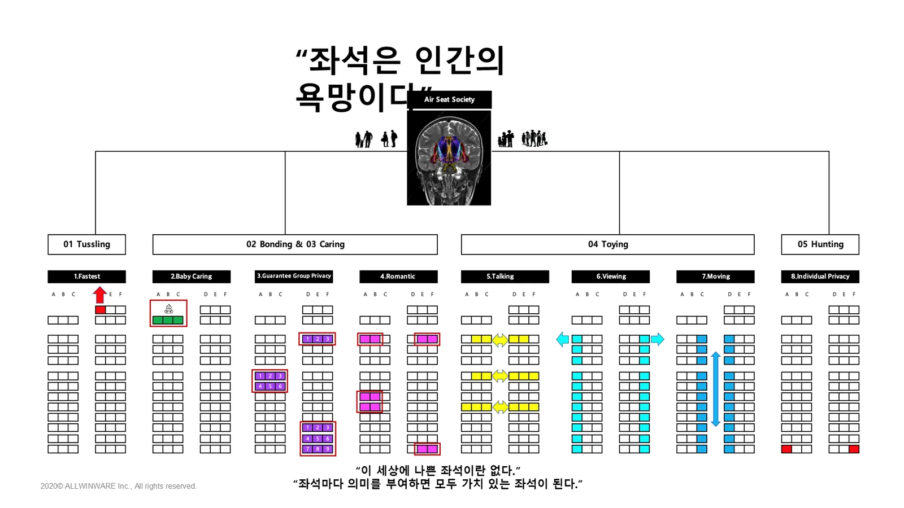
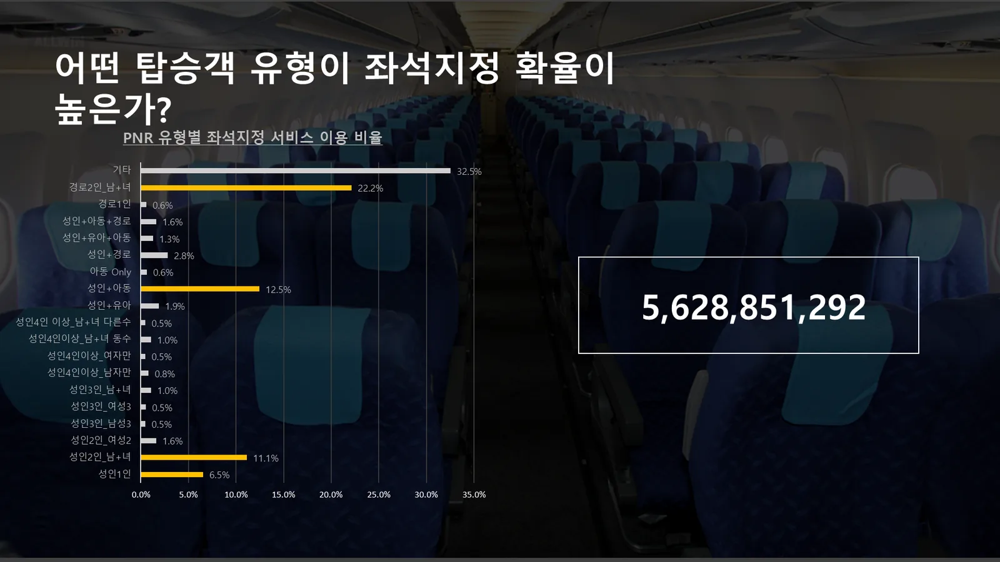
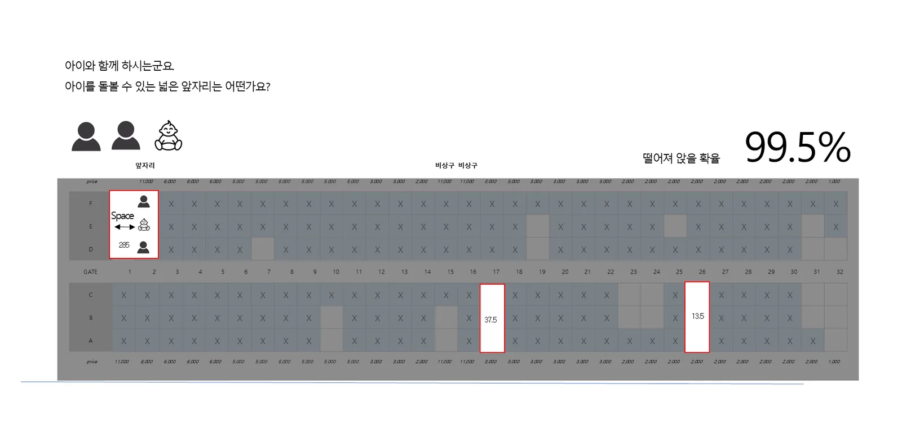
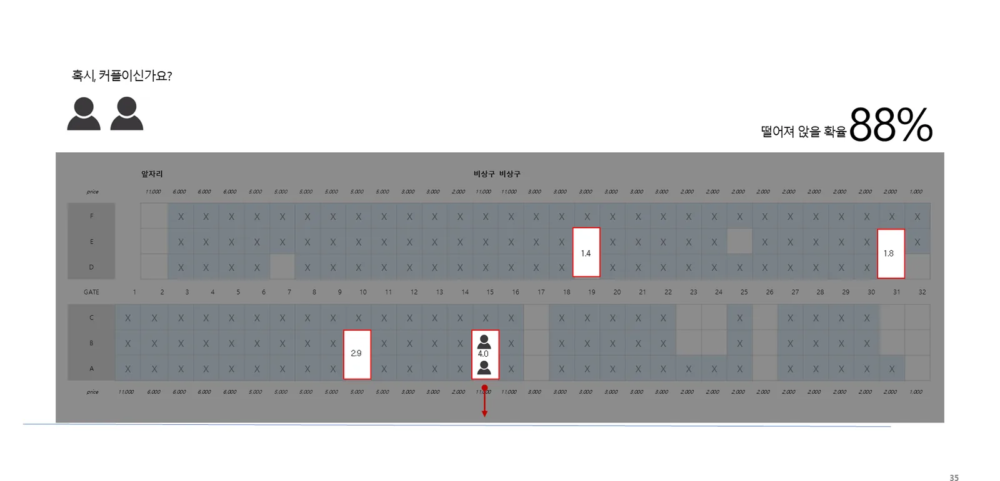
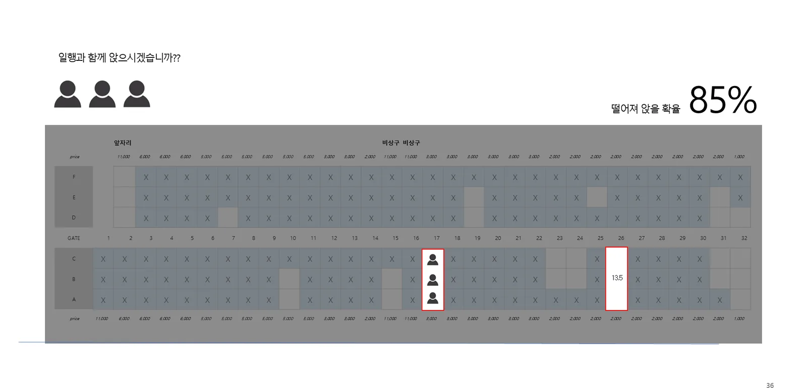
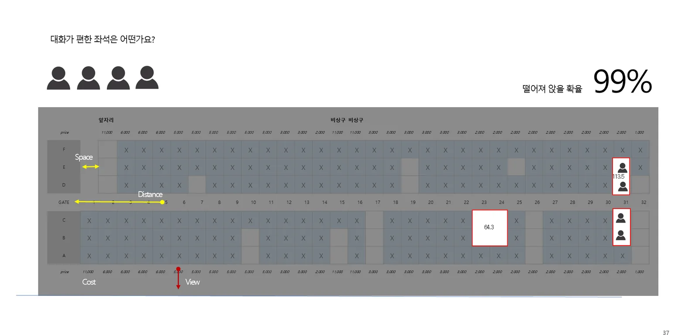
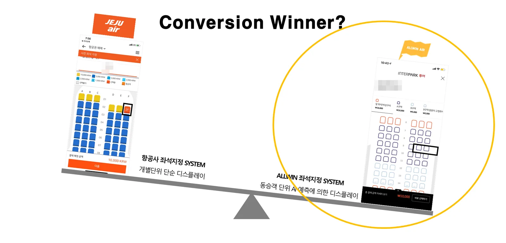
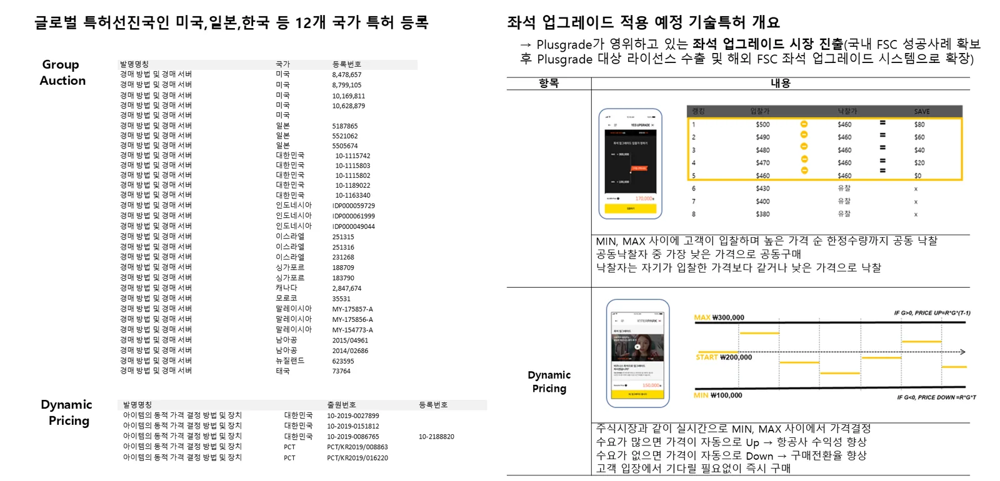
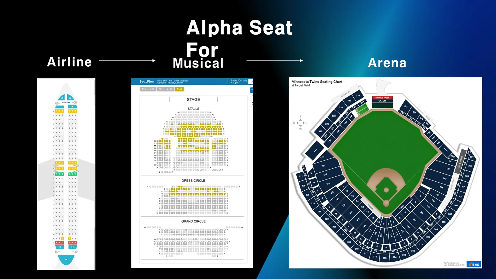

팔리지 않는 좌석이 곧 시장입니다
항공기 좌석 대부분은 아직 유료로 지정되지 않습니다. 앞좌석과 비상구 같은 일부 열만 팔리고 나머지는 대부분 비어 있습니다. 좌석마다 고객에게 의미 있는 이유를 붙여 주면, 이 좌석들이 새로운 매출이 됩니다.


예약(PNR)에서 고객의 상황을 읽습니다
같은 예약으로 묶인 동승객이 누구인지(혼자, 커플, 아이 동반, 어르신 동반, 단체 등)에 따라 좌석을 지정할 확률이 크게 다릅니다. 올윈에어는 이 데이터를 바탕으로 누구에게 어떤 좌석을 먼저 보여줄지 정합니다.

이렇게 추천합니다
좌석을 지정하지 않으면 일행이 떨어져 앉을 확률을 함께 보여주고, 그 상황에 맞는 좌석을 바로 제안합니다.




왜 전환율이 높아지나

| 구분 | 일반 항공사 좌석지정 | 올윈에어 좌석지정 |
|---|---|---|
| 선택 단위 | 탑승객 개별 단위 | 예약(PNR) 기반 동승객 단위 |
| 화면 | 좌석 배치도 단순 표시 | AI 예측으로 묶은 추천 좌석 표시 |
| 고객 경험 | 빈 좌석을 직접 찾고 비교 | 추천 중에서 고르고 바로 결제 |
특허 기술
![PNR 기반 특허엔진 도식 'C.R.(Conversion Rate) Engine'. 왼쪽 항공기 좌석(Seat)과 오른쪽 면세품(Dutyfree)이 가운데 PNR(Passenger Name Record) 동승객 정보로 연결. 좌석: 전 세계 잠재적 좌석지정 시장 규모(2019년 항공권 8,990억 달러의 10% ≈ 900억 달러). 면세: 국내 면세 시장 규모(2019년 24조 원). AGS 특허엔진(비선호 좌석까지 원스톱 구매 엔진): 비행기 좌석의 사전 구매 예약 방법 및 장치(10-2021-0035677), 아이템 추천 방법 및 장치(10-2020-0069932), 경매 방법 및 경매 서버(1115802 외, 좌석 업그레이드용). DGS 특허엔진(동승자 면세품까지 면세한도 내 원스톱 구매 엔진): 면세품 사전구매 예약 방법 및 장치(10-2021-0023742), 면세품 노출 제어 방법 및 장치(10-2021-0057065), 아이템 추천 방법 및 장치(10-2020-0069932).](../img/ko/slide-53.webp)

- 비행기 좌석의 사전 구매 예약 방법 및 장치 (출원 10-2021-0035677)
- 아이템 추천 방법 및 장치 (출원 10-2020-0069932)
- 경매 방법 및 경매 서버 — 미국·일본·한국 등 12개국 등록 (좌석 업그레이드 가격결정용)
- 면세품 사전구매 예약 방법 및 장치 (출원 10-2021-0023742), 면세품 노출 제어 방법 및 장치 (출원 10-2021-0057065)

자주 묻는 질문
- AI 좌석추천은 어떻게 작동하나요?
- 예약(PNR)의 동승객 구성과 여정을 분석해, 함께 앉을 수 있는지와 앞좌석·비상구·창가·통로 등 좌석 특성을 고려한 추천 좌석을 먼저 보여줍니다. 고객은 추천 중에서 고르거나 직접 바꿔 결제합니다.
- 좌석추천은 항공사 좌석에만 쓸 수 있나요?
- 좌석이 있는 예약이라면 공연장·경기장 등에도 적용할 수 있도록 설계되었습니다.
- 관련 특허가 있나요?
- PNR 기반 좌석 사전 구매, 아이템 추천, 면세품 사전구매에 관한 특허를 출원했고, 좌석 업그레이드용 경매·가격결정 특허를 12개국에 등록했습니다.
올윈에어와 연동을 시작하세요
항공사·부가서비스 공급사, 여행사·OTA·여행 플랫폼 모두 한 번의 연동으로 시작할 수 있습니다. 연동 방식과 일정은 제휴사 환경에 맞춰 협의합니다.
제휴 이메일partnership@allwin.co.kr
대표 연락처 (평일 09:00~18:00)1522-2284